FPGA · ESP32 · Digital pet
Blinkit is a digital friend, kind of like a Tamagotchi. He started as my final project for my Verilog class, running on an FPGA, and now I'm turning him into an ESP32 keychain with a round touchscreen. Blinkit is my idea and my design. I used AI along the way to help write and debug the Verilog, then tested everything on the board myself.
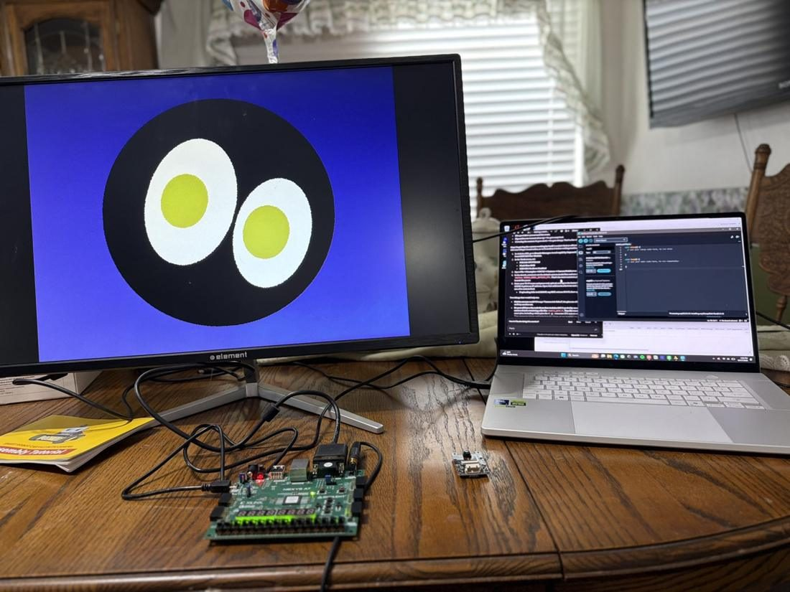
PART 1 · class final project · finished November 2026
Built in Verilog on a Nexys A7 board. There's no processor, so everything he does is hardware logic. Version 20 is the one I demoed for the class.
His face is drawn live on a VGA monitor. He blinks, looks around, and gets heart eyes, star eyes, or tears depending on his mood.
Happy, sleepy, dizzy, angry, and more, each with its own trigger. Make him angry three times in 20 seconds and he gets sad.
Every time he hatches, he gets a random eye color and pupil shape, so each one looks different.
He uses the board's motion and temperature sensors to react: shake him and he gets dizzy, flip him and he gets anxious, and when the room cools down he gets cold.
He has 16 sounds played over PWM. I made them in Voice Lab, a browser tool I designed for it.
The board's 7-segment display spells out how he's feeling.
Video · 40 sec
He hatches from his egg, then the board's buttons change his mood: happy, heart eyes, surprised, angry, and sad. At the end I press CPU RESET and a new one hatches with different colors. The 7-segment display spells out each mood.
Final demo version.
The design was failing timing by 4 ns. I added a register to split up a long path in the sound engine, and it passed with 0.27 ns to spare.
His faces on a real monitor, all from the final version. His eye color and pupil shape are random every time he hatches.
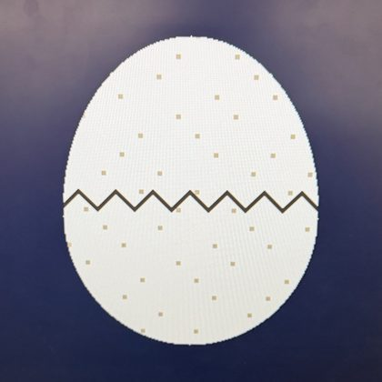
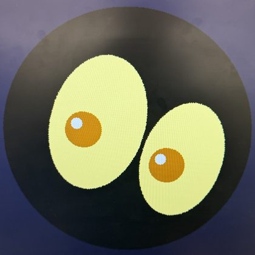
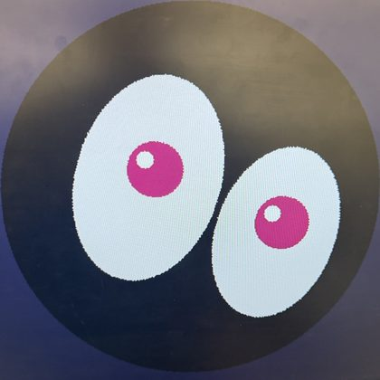
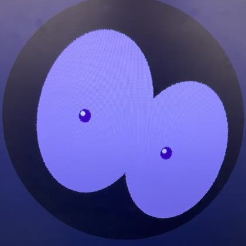
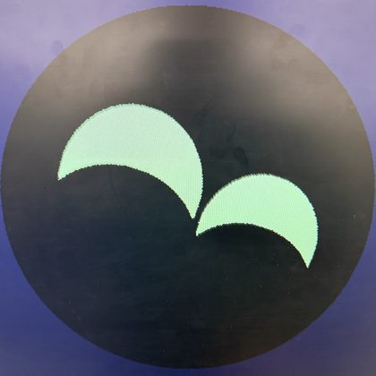
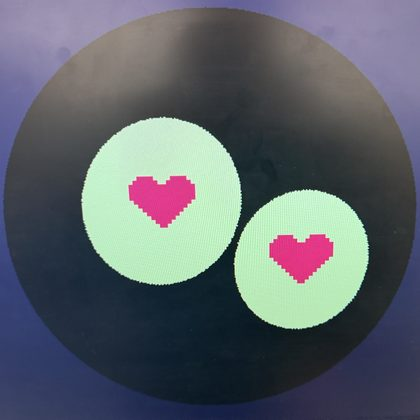
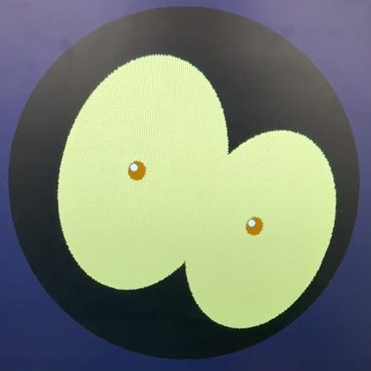
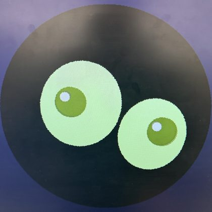
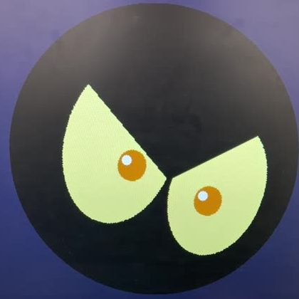
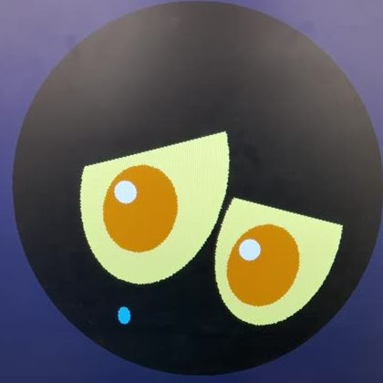
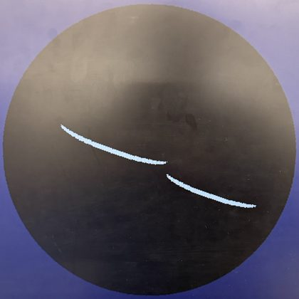
The board's 7-segment display spells out his mood at the same time.
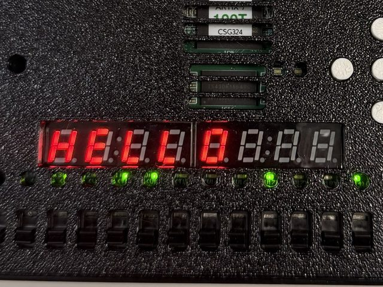
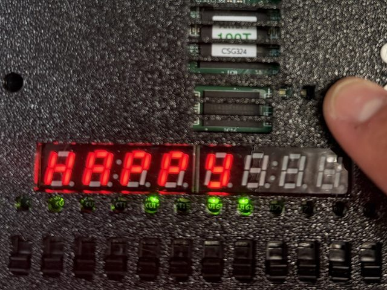
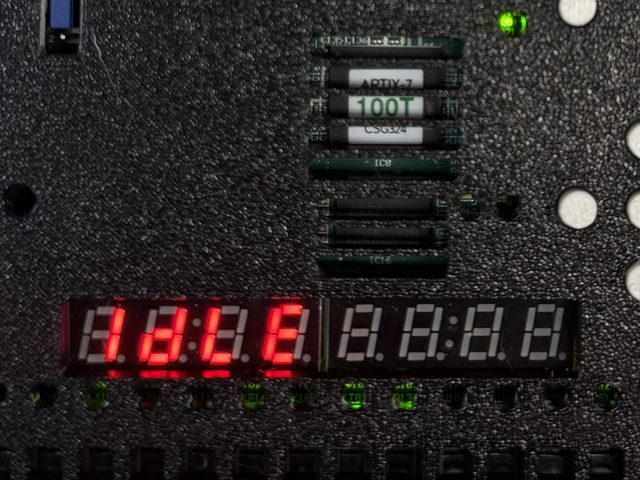
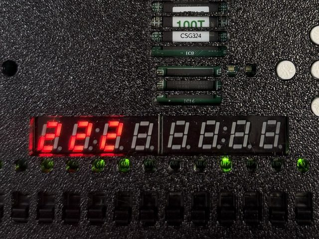
Before the demo I wrote testbenches for the button debouncer and the mood state machine and ran them in Vivado. The debouncer ignores the bouncing and gives one clean press. The mood state machine goes through hatch, pet, angry, happy, and a debug mood exactly in order, with a sound trigger on every change.
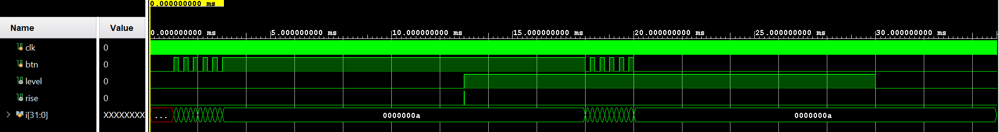
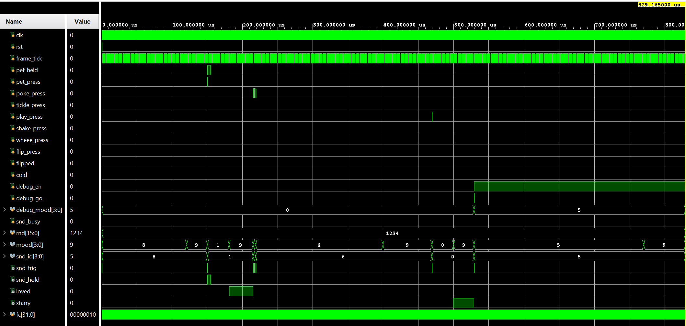
PART 2 · in progress
Now I'm turning Blinkit into a keychain you can carry around, using an ESP32 with a round touchscreen.
Before writing any firmware, I designed Face Lab, a browser tool for planning his face on the round screen: eye shapes, pupils, mouths, and animated moods.
Stroke to pet him, tap to poke him, and hold to open a menu.
Two Blinkits can meet over Bluetooth, and if both owners agree, they can hatch a baby that mixes both of their looks.
There's a mode that turns Bluetooth off completely if you want him to keep to himself.
Video · 52 sec
Me clicking through the keychain's whole interface in Face Lab: moods, petting, the menu, and meeting another Blinkit.
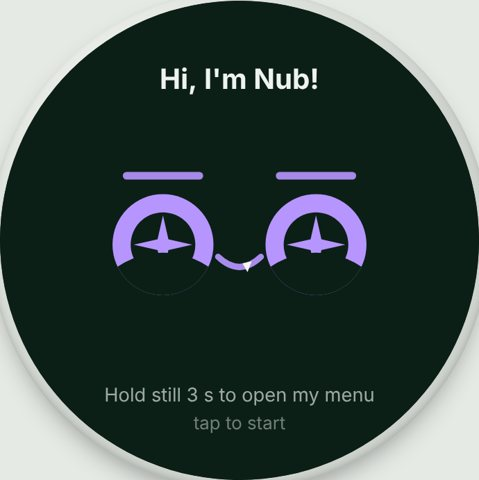
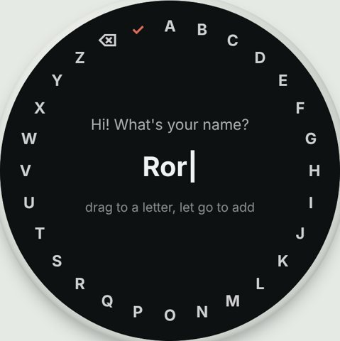
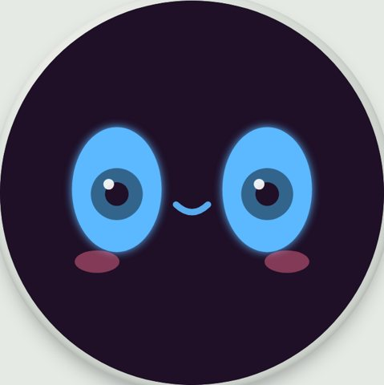
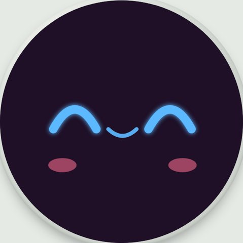
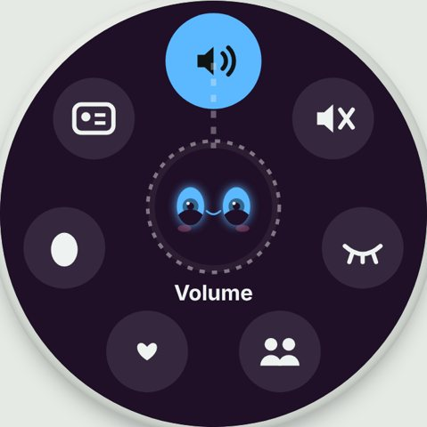
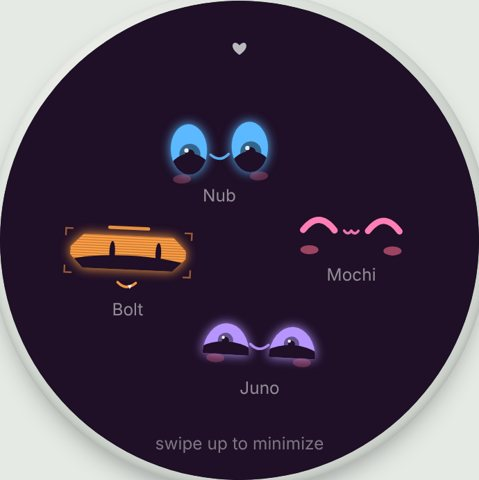
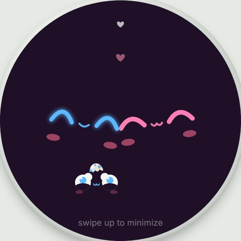
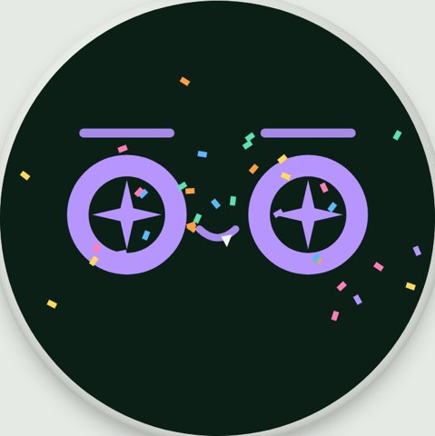
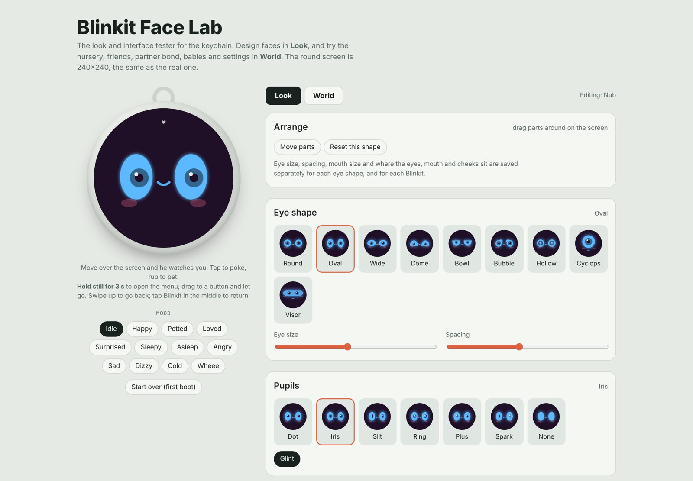
Right now his brain runs on an ESP32 on a breadboard, with buttons to pet, poke, and play, a buzzer for sounds, and a small LCD for his face while I wait on the round screen.
Video · 31 sec
Testing him on a breadboard before the round screen shows up.
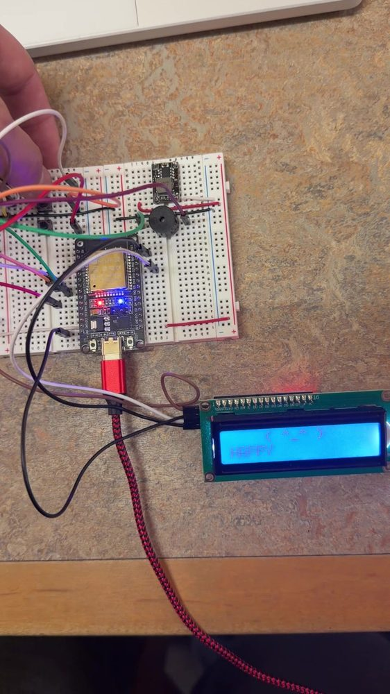
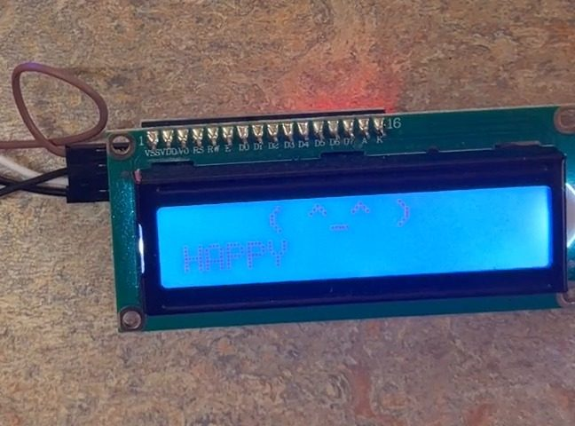